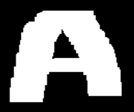
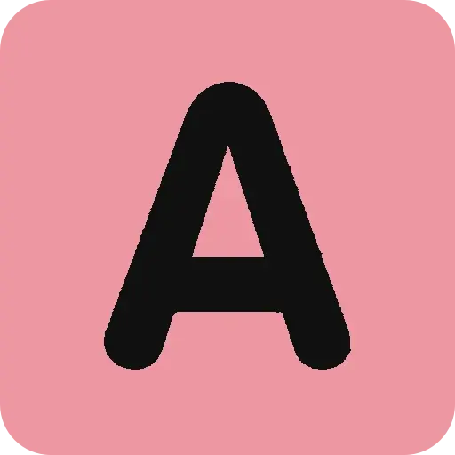
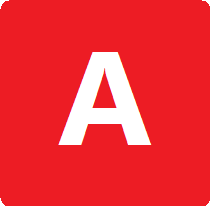
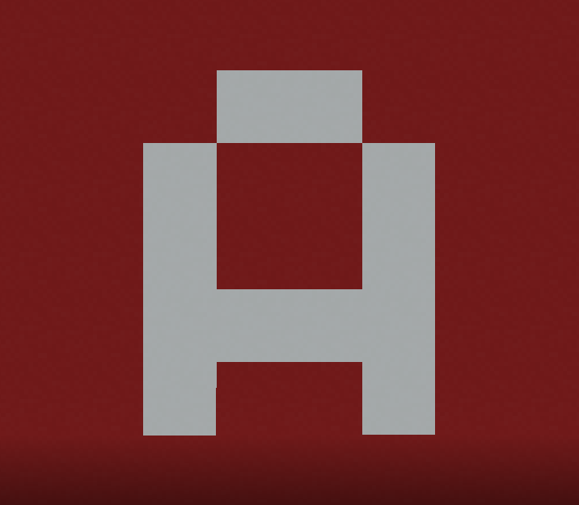

A Emoji
🅰️, officially named A Button (Blood Type), is one of the many emojis on the Internet. Its primary design consists of the A letter on a red background. A Button (Blood Type) was approved as part of Unicode 6.0 in 2010 and added to the Emoji 1.0 in 2015.
It is one of the earliest Horibyte memes, introduced in December 2023, along with Horibyte Moments. Initially regarded by Horibyte as a "shouting emoji", the A Button emoji has since became popular among Horifans, and over time variations of it have been made by Horibyte or others.


An A drawn by Horibyte in Windows 1.0, during the Upgrade Saga II

An A made by Horibyte. Origin unknown. Originated from a Mastodon post.

An A made by Horibyte to mock Meta/Facebook's own A emoji design

One side of the A building from the original Horicraft.